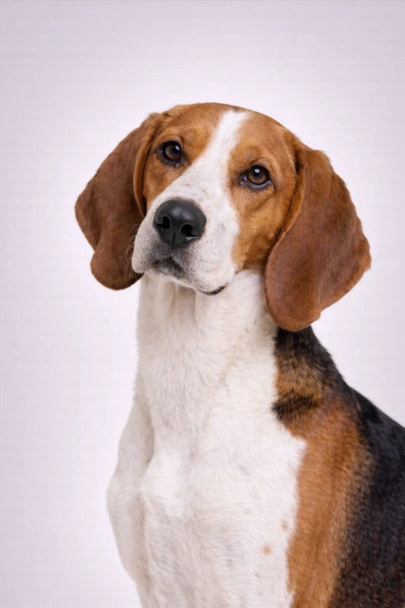

İngiliz Foxhound
Olarak bilinen arkadaş canlısı, nazik, İngiliz Foxhound dünya çapında kalpleri fethetti.
21-25 in
55-75 lbs
Irk Puanları
Mizaç
Son derece sosyal ve nazik. Sürüler halinde çalışmak için yetiştirilmiş, köpek arkadaşlığına ihtiyaç duyar.
🏥 Sağlık
Genel olarak sağlıklı. Kalça displazisi ve kulak enfeksiyonlarına dikkat edin.
🏃 Egzersiz
Bütün gün koşmak için yetiştirilmiş, çok yüksek enerjili. Kapsamlı egzersize ihtiyaç duyar.
Genel Bakış
Sürüler halinde tilki avı için yetiştirilmiş olan İngiliz Tilki Tazısı, arkadaşlığa ihtiyaç duyan nazik ve sosyal köpeklerdir. Nadiren evcil hayvan olarak beslenir.
Mizaç
İngiliz Foxhound, dost canlısı, nazik ve sosyal olmasıyla tanınır. Çocuklarla mükemmel geçinir ve harika bir aile köpeği olur. Erken sosyalleşme, dengeli bir köpek olarak gelişmelerine yardımcı olur.
Sağlık
10-13 yıllık yaşam süresiyle genel olarak sağlıklıdır. Yaygın sorunlar arasında kalça displazisi ve şişkinlik sayılabilir. Düzenli veteriner kontrolleri ve önleyici bakım önemlidir. Sağlıklı bir kilonun korunması pek çok sağlık sorununu önlemeye yardımcı olur.
Egzersiz
Günde en az bir saat aktivite gerektiren, yüksek enerjili bir ırktır. Açık hava etkinliklerini seven aktif ailelerle birlikte gelişir. Eğitim ve bulmaca oyuncakları aracılığıyla zihinsel uyarım da eşit derecede önemlidir. Yeterli egzersiz yapılmazsa davranış sorunları gelişebilir.
⦿ Bu Irk Sizin İçin Uygun mu?
✓ En Uygun
- Çok aktif sahipler
- Çok köpekli evler
- Kırsal çevre
✗ İdeal Değil
- Daire sakinleri
- Tek köpekli evler
Değerlendirmemiz: Sürüler halinde tilki avı için yetiştirilmiş olan İngiliz Tilki Tazısı, arkadaşlığa ihtiyaç duyan nazik ve sosyal köpeklerdir. Nadiren evcil hayvan olarak beslenir.